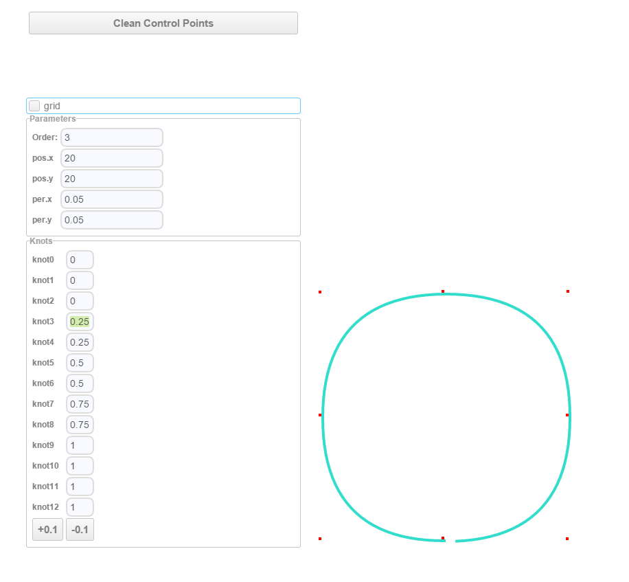

上一篇文章已经介绍了贝塞尔曲线。本篇文章接着介绍B样条曲线。
B样条曲线，简单来说，它是对贝塞尔曲线的一个补充。为什么这样说呢？是因为贝塞尔曲线某些情况下不实用：曲线上每个点受所有控制点影响，这会给调整曲线工作带来麻烦。可以想到的第一个优化是，把整个贝塞尔曲线变成多段贝塞尔子曲线的拼接。然而，这个方案也不好用，因为拼接工作很难做好，因为要拼接曲线显得“光滑”前提是保证相邻曲线之间的连续性。
于是，老外发明了一个算法:De Boor's algorithm，基于这个算法的曲线也被称为贝塞尔曲线的变种：B-Spline(B样条)曲线。
B-Spline的定义
B-Spline曲线我所知道的第一种估计也是最主要的定义：递归定义，其实是贝塞尔曲线的递归定义的一般化。先搬出贝塞尔的递归定义：
\[ P_{i}^{k} =\begin {cases} P_{i} 【k=0】 \\ (1-t)P_{i}^{k-1}+tP_{i+1}^{k-1} 【k=1,2,\cdots ,n,i=0,1,\cdots ,n-k】 \end {cases} \]
而B-Spline是：
\[ N_{i}^{n}(x) = \frac {x-u_{i}}{u_{i+n}-u_{i}}N_{i}^{n-1}(x) + \frac {u_{i+n+1} - x}{u_{i+n+1}-u_{i+1}}N_{i+1}^{n-1}(x) \]
\[ N_{i}^{0}(x) =\begin {cases} 1 【x \in [ u_{i},u_{i+1} ) 】 \\ 0 【otherwise】 \end {cases} \]
(怎么也能看出一丝相似吧。)
从公式来看，似乎是变复杂了。然而其实现代码可以很简单，比如github上的这个js实现:https://github.com/thibauts/b-spline，它的B-Spline核心代码只有10行不到(OTL)。
对于这条公式的剖析，我发现有人已经做得机好了：
B-样条曲线教程B-spline Curves Notes目录
B-样条基函数：定义 B-spline Basis Functions: Definition
扒了下原文，原来是密西根理工大学的教学讲义: http://www.cs.mtu.edu/~shene/COURSES/cs3621/NOTES/
如果认真看完这些资料，基本该懂的都懂了。
因为我自己来写B-Spline剖析肯定写不到这个深度，当然也没必要。所以我做了点别的事情：写了一个curve designer：
(这个东西基于zebra WebUI和上面那个bspline，顺便吐槽下，zebra没有看起来那么好用)
目的是实现一个B样条曲线的可视化编辑器，通过改变参数来理解B样条的实际特性。这可比看公式看论文爽多了。

博主将十分感谢对本文章的任意金额的打赏^_^